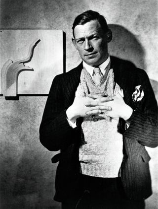
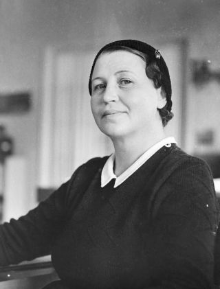
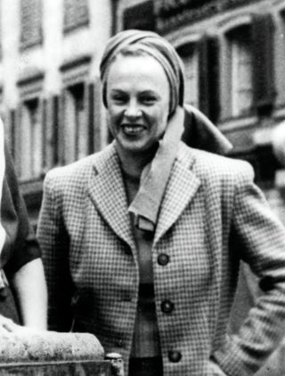
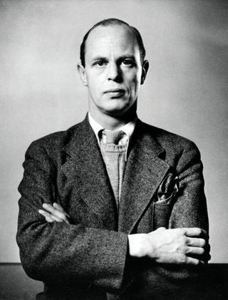

Alvar Aalto
In 1935, four young idealists established a dynamic company with grand ambitions. Not least of these was to market and sell the Aaltos’ furniture, lighting, and textiles, particularly on international markets. Alvar Aalto’s pioneering work, in the spirit of the great architects of the 20th century, was a significant factor in the worldwide proliferation of Nordic design, inspiration to generations of designers, and a core element of Artek’s success.
Today, Alvar Aalto is still central to Artek, both in the timeless designs that form a major part of the collection and in the enduring influence of his design legacy.

Aino Aalto
IThe architect and designer Aino Aalto played an important part in establishing and shaping Artek. In addition to her own independent projects and the collaborations she undertook with her husband, Aalto also served as the company’s first Design Director and, from 1941, its Managing Director.
A formidable colleague, her leadership of the company’s interior design division, called the Drawing Office, was decisive in determining the company’s aesthetic direction. Overall, Aalto’s contribution was crucial to the realisation of the goals laid out in the Artek Manifest.

Marie Gullichsen
An artist in her own right, Maire Gullichsen studied painting in Paris and Helsinki. Part of a group of young intellectuals and artists in early 1930s Helsinki, Gullichsen was an early believer in Aalto’s talent and a firm defender of modernism. She rapidly assimilated the new ideas and began actively promoting modernist art, design, and architecture.
Under Gullichsen’s direction, Artek organised many exhibitions by world famous artists such as Picasso, Léger, and Calder, establishing Artek as a gateway for international culture in Finland. In 1950, Gullichsen founded the Artek Gallery.

Nils-Gustav Hahl
An art historian, critic, and writer, Nils-Gustav Hahl played a critical role in the history of Artek. It was Hahl who first brought Maire Gullichsen and the Aaltos together, leading to the founding of the company. A polyglot cosmopolitan with an extensive international network, Hahl was active in art circles and fascinated by new trends in art, technology, and society.
Hahl became the first Managing Director of Artek, a position he held until his death in 1941 – at the front during Finland’s Continuation War against the Soviet Union, where he had volunteered as a medical orderly.